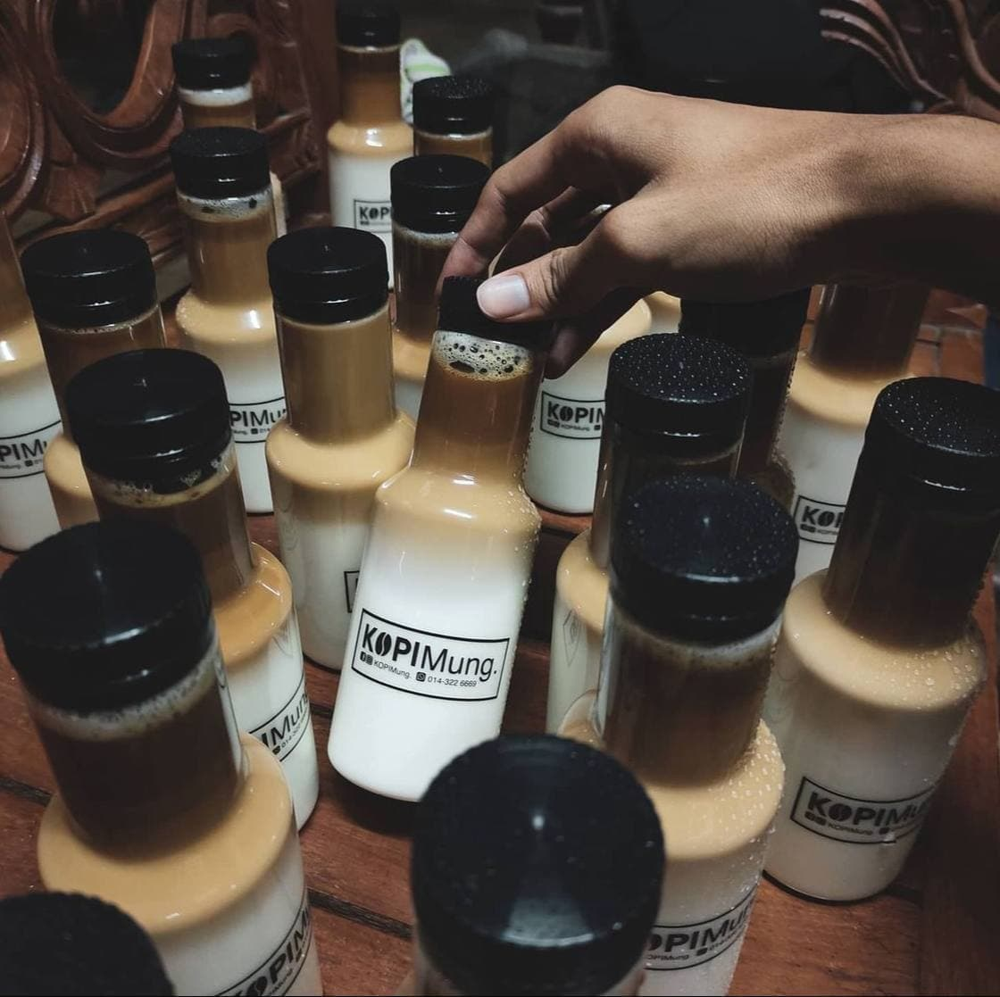

Benefits of Coffee
Coffee is a beloved beverage known for its ability to finetune your focus and boost your energy levels.In fact, many people depend on their daily cup of joe right when they wake up to get their day started on the right foot.In addition to its energizing effects, coffee has been linked to a long list of potential health benefits, giving you all the more reason to get brewing.
Some potential health benefits associated with drinking coffee from a reliable source include protection against type 2 diabetes, Parkinson's disease, liver disease, and liver cancer. Coffee consumption can also support cardiovascular health.
"It does not matter where you are from or how you feel, there is always peace in a strong cup of coffee"
- Gabriel Ba -
1. Enhance athelic performance
Coffee is often used as an aid to improving performance by athletes seeking to improve performance and increase energy levels. Performance-enhancing aids are also known as performance-enhancing agents.
A review of nine studies reported that drinking coffee before exercise improved people's endurance and reduced perceived exercise compared to the control group.
In another study of 126 elderly people, drinking coffee improves athletic performance and walks faster, even after researchers have adjusted factors such as age, tummy fat, and physical activity level. In addition, large studies have reported that moderate caffeine consumption can slightly improve output and time trial completion times. However, the results varied, and researchers also noted that caffeine could have different effects on people.
2. Supports heart health
Some research shows that drinking coffee may benefit heart health. In fact, one review found that drinking three to five cups of coffee per day was tied to a 15% reduced risk of heart disease.
Another review of 21 studies showed that drinking three to four cups of coffee daily was associated with a 21% lower risk of stroke.
What’s more, one study in more than 21,000 people also found that increased coffee intake was associated with a significantly decreased risk of heart failure.
However, keep in mind that caffeine could affect blood pressure levels. Therefore, people with unmanaged blood pressure may need to limit or moderate their caffeine intake
3. Boost energy levels
Coffee contains caffeine, a central nervous system stimulant known for its ability to combat fatigue and raise energy levels.
This is because caffeine blocks the receptors for a neurotransmitter called adenosine and raises the levels of other neurotransmitters in the brain that regulate energy levels, including dopamine.
A small study found that caffeine intake increased the time to fatigue during cycling by 12% and significantly reduced participant's subjective fatigue. Another study found similar results, reporting that caffeine intake before and during a round of golf improved performance, increased subjective energy levels, and reduced fatigue. increase.

"Reading in bed can be heaven, assuming you can get just the right amount of light on the page and aren't prone to spilling your coffee or cognac on the sheets"
- Stephen King -
4. Support brain health
Research is mixed, but some studies suggest that coffee may help prevent certain neurodegenerative diseases, including Alzheimer's and Parkinson's.
One review of 13 studies found that those who consumed caffeine on a regular basis had a significantly lower risk of developing Parkinson's disease. In addition, caffeine intake also slowed the progression of Parkinson's disease over time.
Another review of 11 observational studies involving more than 29,000 people also found that those who consumed more coffee had a lower risk of Alzheimer's disease. Additionally, several studies have shown that moderate coffee consumption may lower the risk of dementia and cognitive decline
5. May promote weight management
According to some research, it show that coffee can help with weight management by reversing fat storage and supporting gut health. For example, one review of 12 studies concluded that higher coffee consumption may be associated with lower body fat, particularly in men.
In another study, an increase in coffee consumption was associated with a reduction in body fat in women.
One study also found that people who drank one to two cups of coffee per day were 17% more likely to meet recommended levels of physical activity compared to those who drank less than one cup per day. A high level of physical activity can contribute to weight control.